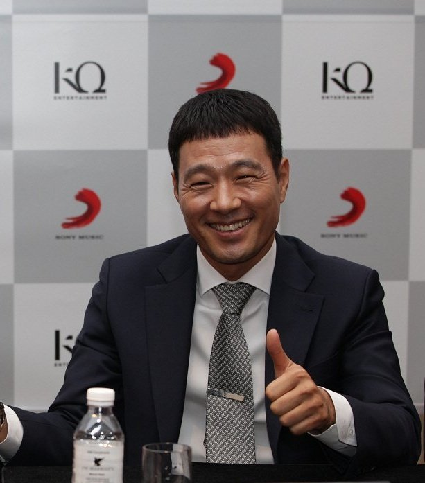
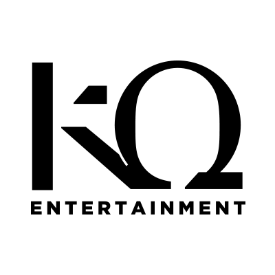
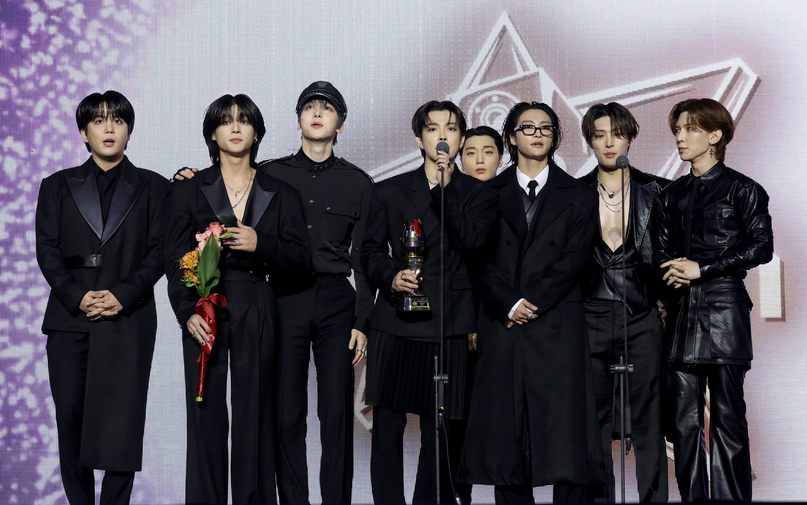
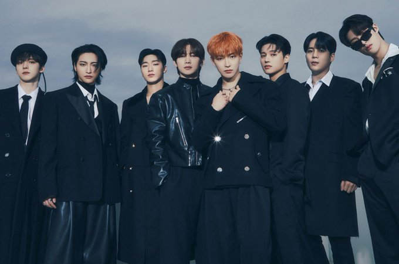

About ATEEZ
ATEEZ, sebuah nama yang kini bersinar terang di kancah K-Pop global, telah mencuri perhatian penggemar musik di seluruh dunia dengan musik dan penampilan panggung mereka yang enerjik dan memukau. Dibentuk oleh KQ Entertainment, grup beranggotakan delapan orang ini debut pada tahun 2018, ATEEZ telah mengalami pertumbuhan yang pesat, berhasil merangkul penggemar dari berbagai negara dan budaya.
Perjalanan ATEEZ dimulai jauh sebelum mereka resmi debut. Sebagai trainee di bawah naungan KQ Entertainment, para anggota ATEEZ menjalani pelatihan intensif dalam berbagai bidang, seperti vokal, rap, dance, hingga produksi musik. Proses pelatihan yang ketat ini bertujuan untuk membentuk para anggota menjadi seniman yang serba bisa dan mampu menghasilkan karya-karya berkualitas tinggi. Sebelum debut, ATEEZ telah merilis beberapa pra-debut single yang berhasil menarik perhatian publik dan membangun basis penggemar awal.
Ateez Destiny disingkat menjadi ATINY
merupakan fandom ATEEZ, sebuah komunitas yang terikat erat dengan delapan pemuda berbakat ini. Hubungan antara ATEEZ dan ATINY begitu kuat, seringkali disebut sebagai hubungan yang saling menguntungkan. ATINY memberikan dukungan tanpa henti kepada ATEEZ, sementara ATEEZ selalu berusaha membalas cinta penggemar dengan karya-karya terbaik mereka. Nama ATINY diumumkan oleh ATEEZ di V Live pada 17 November 2018, dan ditetapkan secara resmi pada 22 November 2019. ATEEZ memiliki slogan grupnya yaitu 8 MAKES 1 TEAM
merupakan representasi nyata dari ikatan kuat yang terjalin di antara delapan anggota. Setiap individu memiliki peran dan keunikan masing-masing, namun ketika mereka bersatu, mereka menjadi sebuah kekuatan yang tak terhentikan. Slogan ini juga menjadi pesan bagi para penggemar untuk selalu mendukung ATEEZ sebagai satu kesatuan.
MEMBERS
KQ ENTERTAIMENT
 KQ Entertainment adalah sebuah perusahaan manajemen yang mulai beroperasi sebelum mendebutkan Ateez pada tahun 2018. Perusahaan ini mengelola dua label utama: Seven Seasons, yang secara eksklusif menaungi grup Block B, dan KQ Produce, yang berfokus pada penyanyi-penulis lagu serta produser di bawah naungannya. KQ Entertainment didirikan oleh Kim Gyu Wook pada bulan Juni 2016 dan berlokasi di J Studio 3F, Donggyo-ro 25-gil 28, Mapo-gu, Seoul. Saat ini, artis aktif di bawah KQ Entertainment meliputi grup Ateez dan Xikers, serta artis dari label KQ Produce seperti Babylon, Eden, dan Maddox. Dengan diversifikasi artis dari berbagai genre dan pendekatan yang profesional dalam manajemen, KQ Entertainment telah mengukuhkan posisinya sebagai salah satu agensi hiburan yang diperhitungkan di industri K-Pop dan musik global.
Setelah Block B meninggalkan Stardom Entertainment pada tahun 2013, Kim Kyu-wook mendirikan label Seven Seasons khusus untuk grup tersebut, nama yang mewakili tujuh anggotanya. Pada bulan Juni 2016 Seven Seasons mengganti nama mereka menjadi KQ Entertainment untuk melebarkan sayap, mengembangkan dan mendukung lebih banyak artis serta meningkatkan manajemen mereka melalui perubahan struktural. Seven Seasons telah beroperasi sejak saat itu sebagai salah satu dari dua anak perusahaan di sepanjang label KQ Produce.
Grup K-pop Ateez memulai debutnya pada bulan Oktober 2018 di bawah label KQ Entertainment. Dan pada tanggal 30 Maret 2023, KQ Entertainment mendebutkan boy grup baru Xikers. Selama satu bulan dari 10 April hingga 10 Juni 2024, KQ Entertainment mengadakan KQ ENT. (ATEEZ & xikers): A Grammy Museum Pop-Up bekerja sama dengan Grammy Museum. KQ Entertainment memiliki partnerships dengan label Sony Music, CJ E&M, My Music Taste, dan RCA Records.
LOKASI
ACHIEVEMENTS
Pada 17 November, ATEEZ tampil di Korea Grand Music Awards (KGMA 2024) berhasil memenangkan dua penghargaan, yaitu "Best Song" dan "2024 Grand Honors Choice (Daesang)". Daesang adalah penghargaan tertinggi yang diberikan dalam ajang penghargaan musik di Korea Selatan yang diberikan kepada artis atau grup yang dianggap paling berprestasi dan memiliki pengaruh besar dalam industri musik Korea Selatan selama periode tertentu.
Selengkapnya klik di bawah sini!
Read MoreAteez sekali lagi mencetak sejarah di dunia K-Pop dengan album terbaru mereka, GOLDEN HOUR: Part 2, yang berhasil debut di peringkat No. 1 Billboard 200, menandai pencapaian luar biasa kedua kalinya setelah album THE WORLD EP.FIN: WILL meraih posisi yang sama sebelumnya. Dengan ini, Ateez resmi menjadi grup K-Pop ketiga yang berhasil meraih lebih dari satu album di puncak Billboard 200, membuktikan popularitas global mereka yang terus melesat.
Selengkapnya klik di bawah sini!
Read MoreGALLERY
Album GOLDEN HOUR: Part 2
Album GOLDEN HOUR: Part 2, merupakan mini album ke-11 dari ATEEZ. Album ini dirilis dalam tiga versi berbeda—TO Ver, DIARY Ver, dan FOR Ver—masing-masing menampilkan desain sampul dengan warna unik yang mencerminkan konsep khas ATEEZ. Setiap album terdapat photobook yang berisi foto-foto para anggota, contents envelope, logo sticker, ornament, dua versi photocard (A dan Z), disc, textcard, photoframe dan photocard set, postcard, hingga folded poster. Semua elemen ini dirancang untuk memberikan pengalaman koleksi yang tak terlupakan bagi ATINY, menjadikan GOLDEN HOUR: Part 2 lebih dari sekadar album musik—ini adalah perayaan kreativitas dan dedikasi ATEEZ terhadap penggemarnya.
Mini album ini terdiri dari enam lagu, yaitu Deep Dive, Scene 1: Value, Ice on My Teeth, Man on Fire, Selfish Waltz, dan Enough. Dari keenam lagu tersebut, Ice on My Teeth dipilih sebagai lagu utama (title track), menghadirkan energi eksplosif yang menjadi ciri khas Ateez. Lagu ini menonjolkan perpaduan vokal kuat, rap dinamis, dan melodi intens yang memikat pendengar sejak awal. Video musik untuk Ice on My Teeth dirilis pada hari Jumat, 15 November 2024, melalui akun YouTube resmi KQ Entertainment, agensi yang menaungi Ateez. Dengan visual yang penuh aksi dan konsep sinematik, video ini berhasil menarik perhatian penggemar global dan memperkuat reputasi Ateez sebagai salah satu grup K-Pop paling inovatif dan berpengaruh saat ini.
MUSIK VIDEO RESMI
SPOTIFY ALBUM
Join us and become a proud ATINY!!
✨Join the crew, sail with ATEEZ!✨ Bersama ATINY, mari mendukung Ateez menjelajahi dunia dan menciptakan kenangan tak terlupakan. Registrasi sekarang dan jadi bagian dari petualangan ini!